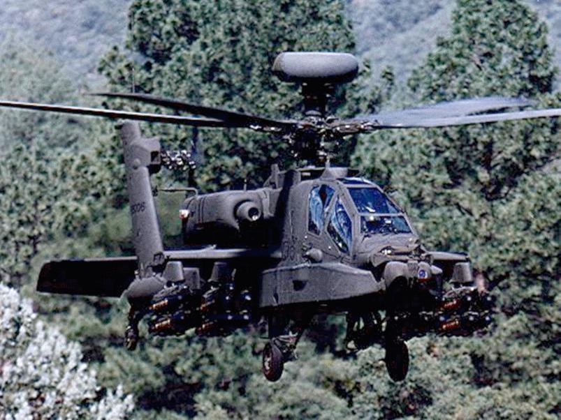

|  | Mark McKeeFull Stack Web DeveloperI am a 22 year Army Veteran that finished up my career in the military as an Apache Aviator.
|
| Dates | Positions |
|---|---|
| 2000-2013 | Army Aviation Chief Warrant Officer CW3 |
| 2002 | Electronic Warfare Officer |
| 2002-2013 | Tactical Operations Officer |
| 2005-2013 | Aviation Life Support Equipment Officer (ALSE) |
| 2006-2007 | Casualty Assistance Officer-in-Charge |
Army Warrant Officer Basic Course
Army Initial Entry Rotary Wing Flight Training
Aviation Life Support Equipment Officer (ALSE)
Apache AH-64A Qualification Course
Apache AH-64D Supplemental Course
Search Evasion Resistance Escape (SERE) Course
Nuclear Biological Chemical (NBC) Course
Army Infantry Basic/Advanced Training
Skills